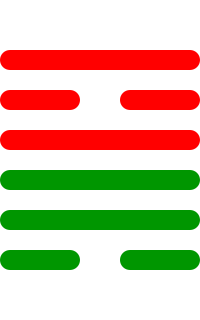

第五十卦
鼎卦

卦辞
元吉，亨。
鼎卦象征鼎器、烹饪与稳定。卦辞意为：大吉祥，亨通。鼎卦教导我们要像鼎一样稳重，能够烹煮食物，滋养人民。
彖传
鼎，象也。以木巽火，亨饪也。圣人亨以享上帝，而大亨以养圣贤。巽而耳目聪明，柔进而上行，得中而应乎刚，是以元亨。
彖传说：鼎，象也。以木巽火，亨饪也。圣人亨以享上帝，而大亨以养圣贤。巽而耳目聪明，柔进而上行，得中而应乎刚，是以元亨。
象传
木上有火，鼎。君子以正位凝命。
象传说：木上有火，就是鼎卦。君子应当效法这种精神，端正位置，凝聚天命。木上有火，象征烹饪和稳定。
爻辞
初六：鼎颠趾，利出否。得妾以其子，无咎
鼎颠趾，利于出否。得妾以其子，无灾害。
初六爻位于最下方，鼎颠趾。鼎颠倒脚，利于出否。得妾以其子，无咎，表示去旧迎新。
九二：鼎有实，我仇有疾，不我能即，吉
鼎有实，我仇有疾，不我能即，吉祥。
九二爻得中，鼎有实。鼎中有实，我仇有疾，不我能即，吉，表示充实而安全。
九三：鼎耳革，其行塞，雉膏不食。方雨亏悔，终吉
鼎耳革，其行塞，雉膏不食。方雨亏悔，终吉祥。
九三爻位置不当，鼎耳革。鼎耳改变，其行塞，雉膏不食。方雨亏悔，终吉，表示虽有困难但终吉。
九四：鼎折足，覆公餗，其形渥，凶
鼎折足，覆公餗，其形渥，凶险。
九四爻接近君位，鼎折足。鼎足折断，覆公餗，其形渥，凶，表示鼎器损坏。
六五：鼎黄耳金铉，利贞
鼎黄耳金铉，利于坚守正道。
六五爻居中尊位，鼎黄耳。鼎黄耳金铉，利贞，表示鼎器完好。
上九：鼎玉铉，大吉，无不利
鼎玉铉，大吉祥，无所不利。
上九爻位于极点，鼎玉铉。鼎玉铉，大吉，无不利，表示鼎器精美。